博客优化：持续集成
通过AppVeyor将博客的编译的过程托管出去，一次配置，一劳永逸。
- 从本地选择性上传博客源文件
- 使用AppVeyor在线编译github的文件
这一篇是在上一篇如何基于hexo+github搭建个人博客之后进行的。
首先为什么会写这么一篇文章，一方面是为了记录一下自己的搭建心得，另一方面当然是为了方便了。
在本地电脑上配置好所有的hexo环境之后，写好的md.文件只能在本地通过hexo -g 编译，而且只能在这一台电脑上完成，如果你换一台电脑，或者硬盘崩了，都需要重新配置。
如果我们把编译的过程托管出去，而我们只需要向github提交文件，就会简单很多。
GitHub备份源文件
新建仓库
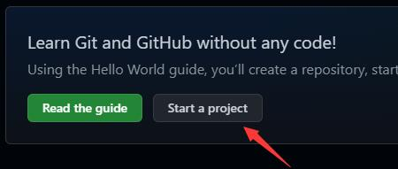
权限设为public
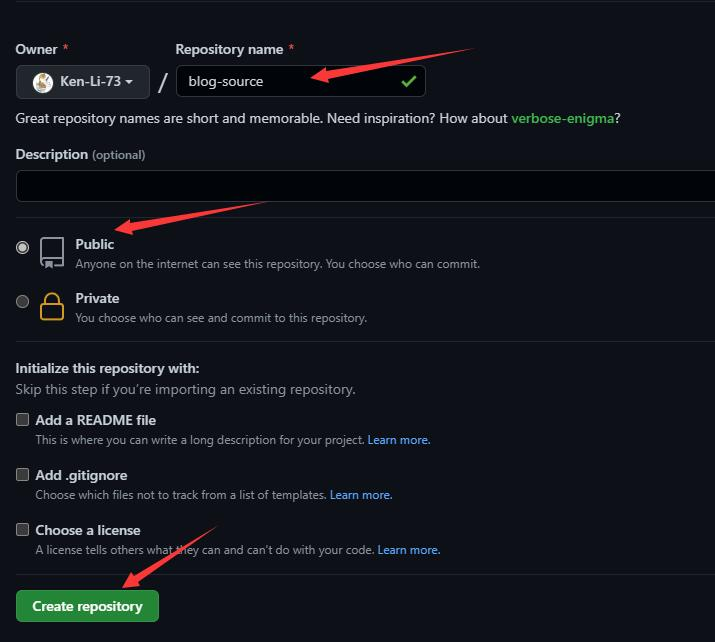
初始化本地仓库（使用hexo搭建的本地文件夹,也就是原来使用hexo -g的站点目录）
1 | git init |
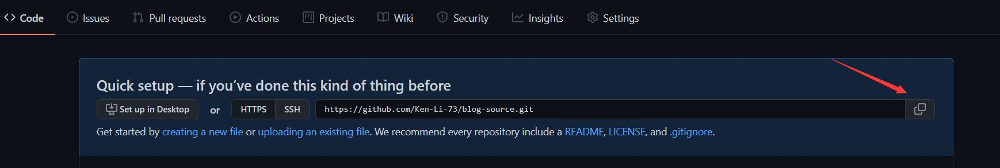
修改.gitignore文件
由于目录下一些文件是通过hexo -g 生成的，所以不需要去备份。
在.gitignore文件添加不需要上传的文件如下：
1 | .DS_Store |
上传文件
在上传之前，如果你使用的是github上下载的主题，请一定要删除里面的.git隐藏文件，否则构建完成后，会缺少一部分页面元素
1 | git add . #添加当前目录下的所有文件到暂存区 |
此时查看自己的仓库，应该已经有了文件。
注册AppVeyor
登录AppVeyor
Appveyor对于windows支持比较友好，支持代码提交到github。
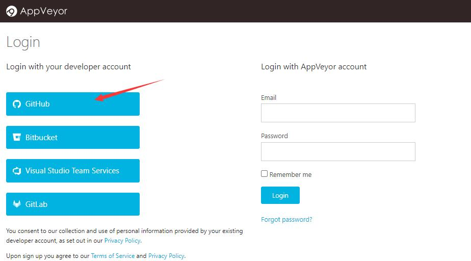
第一次登录时，会让github授权，同意就行。
创建新项目
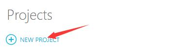
选择在github上新建的仓库
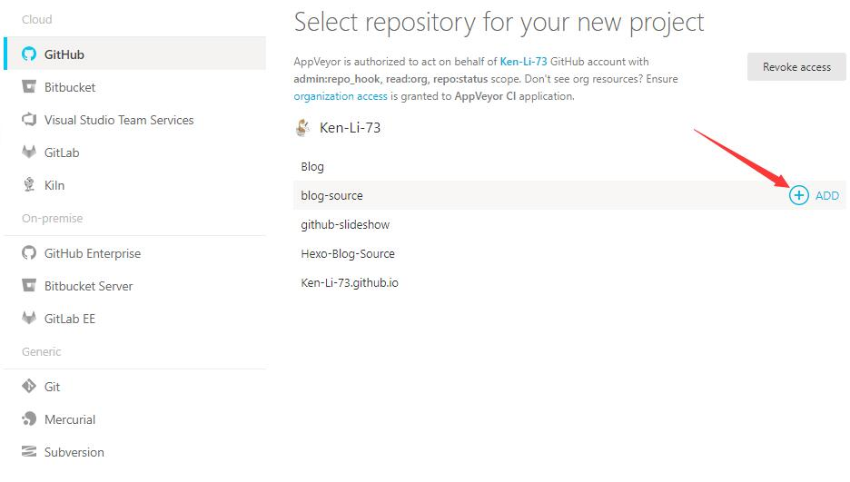
设置访问权限
生成访问令牌
打开github设置Settings
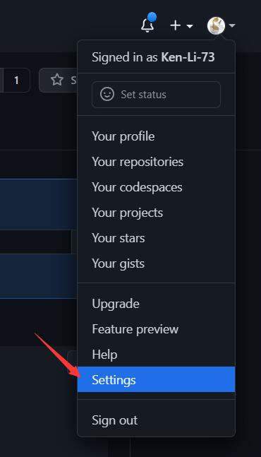
选择Developer Settings
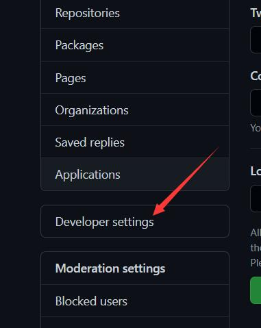
选择Personal access tokens
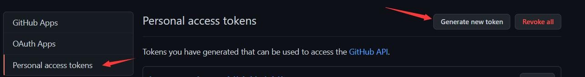
配置Personal access tokens
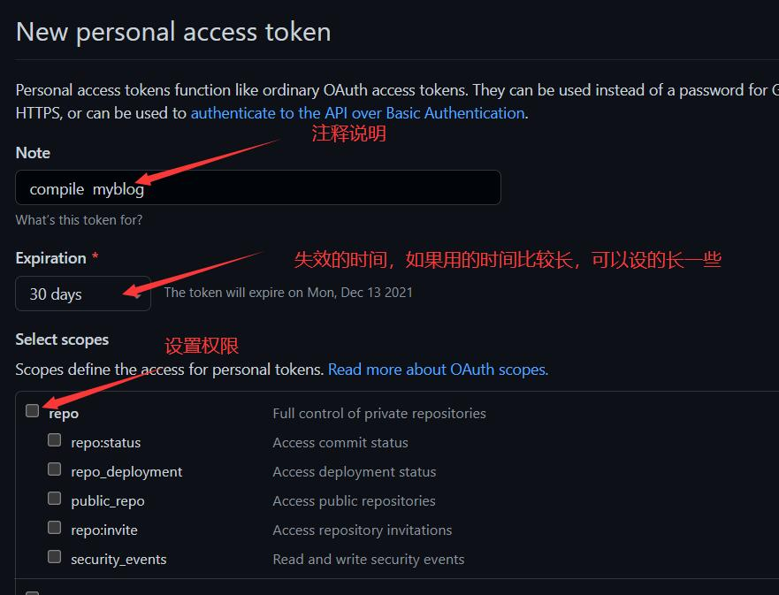
配置完成后，下滑到最后，点击Generate token1 生成tokens
复制Access Token
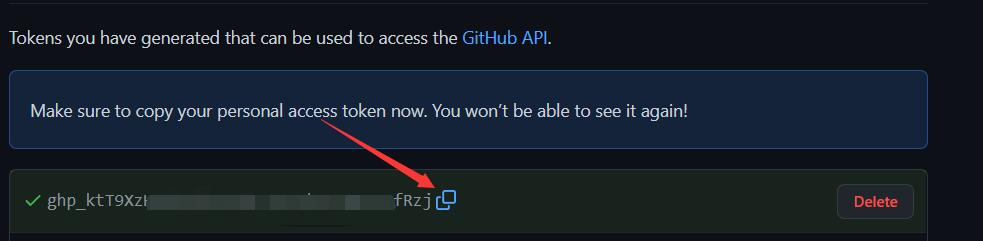
加密Access Token
因为生成的Token需要写进公开的脚本中，所以要进行加密。
打开AppVeyor加密页面，进行如下操作：
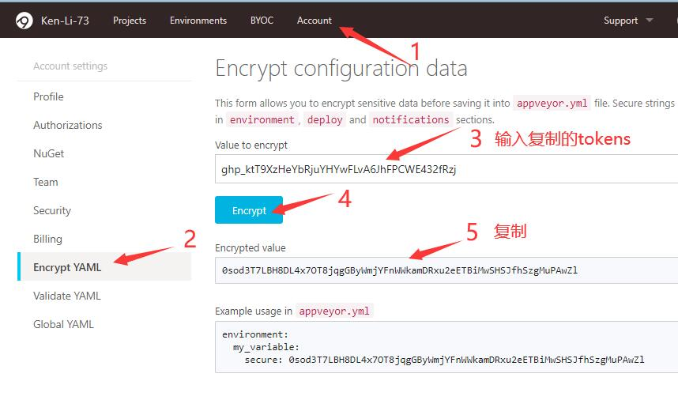
复制加密的Token
配置appveyor.yml
在本地配置根目录下新建一个文件appveyor.yml
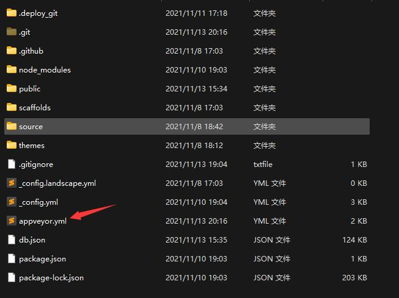
粘贴以下代码：其中将加密的Token粘贴进去
1 | clone_depth: 5 |
配置AppVeyor
打开AppVeyor新建的项目界面，配置environment
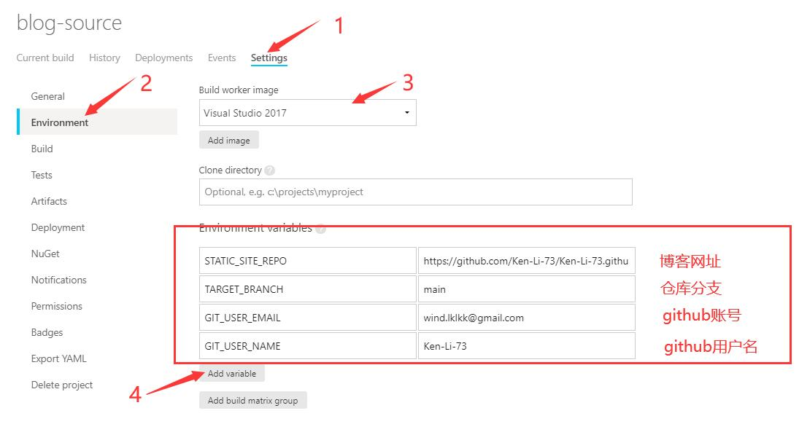
上传源文件
1 | git add -A # 暂存提交，和git add . 的区别是可以删除文件 |
此时已经基本完成所有操作，可以在Appveyor网站的current build观察到当前的构件情况
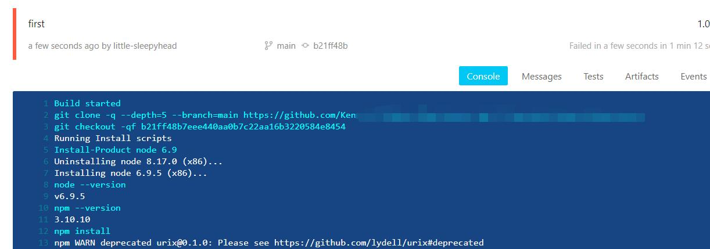
可以看到最后成功了
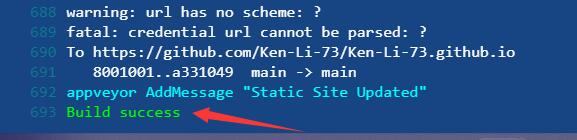
后面就可以通过向新建的备份文件仓库push文件就行了。
如果换了新电脑，只需要将仓库的文件clone下来就行了
补充：
我在编译过程中发现没有Error，但是页面仍没有加载出来，而且什么都没有了。最后查看解析过程发现有一个 No layout的Warn。
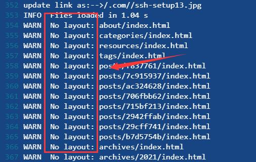
原来是因为上传主题，而主题里面有一个.git的隐藏文件，上传时会把这个主题当成一个独立的模块，导致页面生成失败。
解决方案是：
删除文件夹里面的.git文件夹
执行下面的代码
1 | git rm -r --cached [文件夹名] |